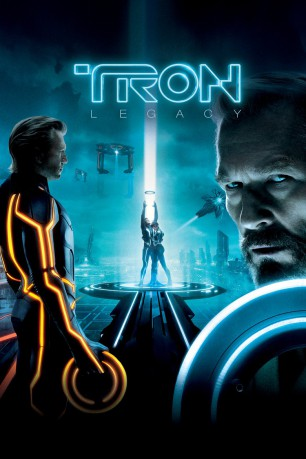

#81 TRON: Legacy
Auszeichnungen: für 1 Oscars nominiert
 
 IMDB-Wertung: 6.8 / 10
IMDB-Wertung: 6.8 / 10  Metascore: 49
Metascore: 49 
21 Jahre nach dem mysteriösen Verschwinden seines Vaters folgt Sam Flynn dem Lockruf eines Pagersignals und wird in die digitale Computerwelt des "Grid" hineingezogen. Dort hat Clu, das einst von seinem Vater geschaffene Programm, die Macht übernommen, dort verstecken sich auch Kevin Flynn und sein Protegé, das Programm Quorra. Nachdem Vater und Sohn sich wiedergefunden haben, verfolgen sie nur ein Ziel, wollen das Grid verlassen. Doch genau das will auch Clu, um seine Diktatur auf die Welt der User auszudehnen.
Jahr: 2010
Dauer: 125 Minuten
FSK: 12
Land: USA Studio: Walt Disney Studios Motion PicturesTonspuren:
Untertitel:
Auflösung: 720p (1280×720) Größe: 5601 MB
Genre: Action, Abenteuer, Fantasy, Sci-Fi
Regisseur: Joseph Kosinski
Drehbuch: Edward Kitsis, Adam Horowitz, Edward Kitsis, Adam Horowitz, Brian Klugman
Soundtrack: Thomas Bangalter, Guy-Manuel De Homem-Christo, Daft Punk
Darsteller:
Datei: X:\2-Dilogie(N-Z)\Tron\TRON Legacy (2010, FSK12, 1280x720).mkv seit 02.02.2015
Festplatte: HD Collection-2(A-Z)-3(A-M)
 Alle Filme aus Gruppe '2-Dilogie(N-Z)\Tron'
Alle Filme aus Gruppe '2-Dilogie(N-Z)\Tron'